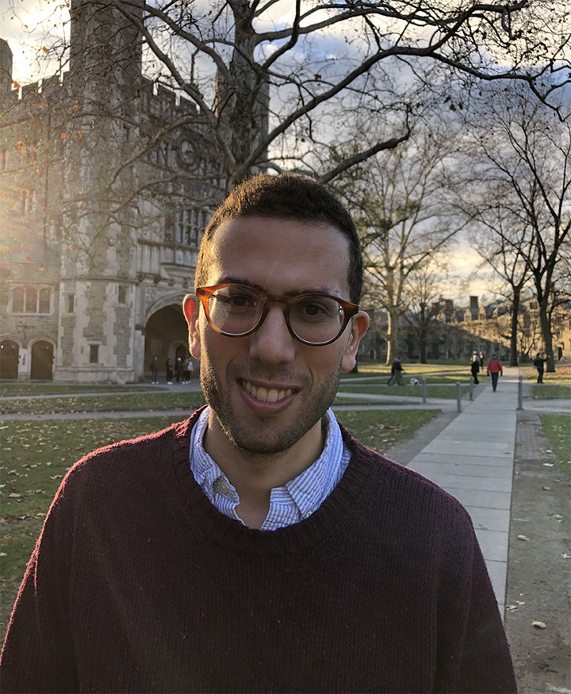

Samy Jelassi
PhD student, Princeton University
Email sjelassi(at)princeton.edu
Curriculum Vitae
Google Scholar
I am a final-year PhD student in the ORFE department at Princeton University. I am fortunate to be advised by Prof. Yuanzhi Li, Prof. Joan Bruna and Prof. Boris Hanin. Previously, I obtained a B.Sc. in computer science from Ecole Normale Superieure de Lyon in 2015 and a M.S. in applied math from Ecole Normale Superieure Paris-Saclay. During my PhD, I was fortunate to do research internships at Facebook AI Research (with Aaron Defazio), at Deepmind (with Bernardo Avila Pires and Remi Munos) and at Google Research (with Srinadh Bhojanapalli and Sashank Reddi).
My current primary interest is in understanding the abilities of attention models in a principled manner. During my PhD, I have focused on questions in the intersection between deep learning and optimization.
Publications
Vision Transformers provably learn spatial structure,
Samy Jelassi, Michael E. Sander, Yuanzhi Li.
Neural Information Processing Systems (NeurIPS), 2022.
Towards understanding how momentum improves generalization in deep learning,
Samy Jelassi, Yuanzhi Li.
International Conference on Machine Learning (ICML), 2022.
[Link]
Adam is no better than normalized SGD: Dissecting how adaptivity improves GAN performance,
Samy Jelassi, Arthur Mensch, Yuanzhi Li, Gauthier Gidel.
Preprint, 2021.
[Link]
Depth separation beyond radial functions,
Luca Venturi, Samy Jelassi, Tristan Ozuch, Joan Bruna.
Journal of Machine Learning Research (JMLR).
[Link]
Adaptivity without Compromise: A Momentumized, Adaptive, Dual Averaged Gradient Method for Stochastic Optimization,
Aaron Defazio, Samy Jelassi.
Journal of Machine Learning Research (JMLR).
[Link] [Facebook announcement]
Auction learning as a two-player game,
Jad Rahme, Samy Jelassi, Matt Weinberg.
International Conference on Learning Representations (ICLR), 2021.
[Link] [Blog post]